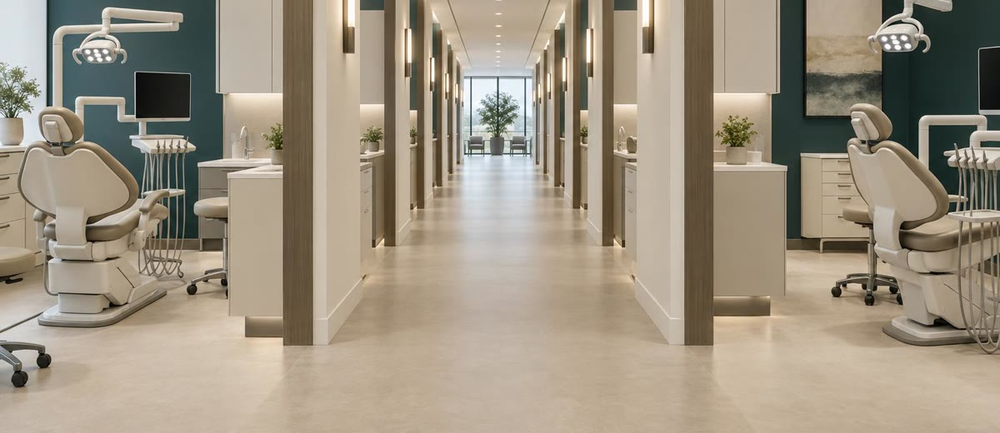

El espejo americano: lo que le pasó al dentista en EEUU en 20 años

En Estados Unidos, el 35% de las clínicas dentales ya no es de ningún dentista.
Son de un fondo.
Los cinco grupos más grandes controlan más de 5.600 consultas entre ellos. Hay más de 130 organizaciones respaldadas por capital privado —las llaman DSO: Dental Service Organizations—. Empezaron hace veinte años desde cero. Hoy el sector americano está en lo que los analistas llaman «segunda oleada»: concentrar lo que ya está concentrado.
España no está ahí. Todavía.
El retraso no es protección
Si hay algo que el mercado dental español lleva oyendo una década es que «aquí es diferente». Que la cultura latina de la clínica de barrio. Que los españoles confían en su dentista de siempre. Que las cadenas tienen mala fama. Que el modelo americano no va a llegar aquí.
El problema es que lleva diez años llegando.
Donte Group cerró 2025 con 427 millones de euros de facturación y más de 440 clínicas propias. Idental sigue abriendo. Sanitas tiene integración vertical. Y el informe de TUSK Practice Sales de septiembre de 2026 —elaborado sobre el mercado americano— documenta exactamente el mismo patrón con veinte años de antelación.
Lo que en EEUU tardó dos décadas puede tardar aquí una.
Cómo funciona el modelo DSO (y por qué debería importarte)
Un DSO no es una clínica con sucursales. Es una estructura que separa la parte clínica de la parte de negocio. El dentista trata pacientes; una central de servicios lleva la contabilidad, el marketing, los recursos humanos, la compra de material y la tecnología. El dentista ya no necesita saber gestionar: solo necesita empaste bien y producción alta.
Eso tiene un efecto concreto en el mercado:
- Escala en la compra: el coste por sillón de una central de 400 clínicas es incomparable con el de una independiente.
- Marketing centralizado: presupuesto de captación que una sola clínica no puede igualar.
- Datos de toda la red: el DSO sabe qué tratamiento convierte mejor, en qué turno, con qué guion de recepción, en qué zona. La independiente trabaja con mucho menos información.
La ventaja del DSO no está en el torno ni en el escáner. Está en la gestión sistematizada. Y eso se puede aprender antes de que lleguen ellos.
Lo que no tiene el DSO (y tú sí)
El modelo DSO tiene un punto débil que los propios analistas americanos documentan: la relación personal. Los pacientes de clínicas independientes tienen tasas de retención más altas y menor sensibilidad al precio. Cuando el dentista eres tú —no un rotativo de tres turnos—, el vínculo es distinto.
Pero ese vínculo no basta solo. Necesita combinarse con sistema.
La clínica independiente que pierde no pierde porque el DSO tenga mejor tecnología. Pierde porque no mide, no hace seguimiento, no activa la base de datos que tiene dormida y responde al teléfono como si no fuera lo más importante del día.
Qué deben hacer hoy las clínicas independientes
El mercado americano dejó una lección clara: las clínicas que sobrevivieron a la oleada DSO no lo hicieron compitiendo en precio. Tampoco gastando más en publicidad. Lo hicieron sistematizando lo que el DSO nunca puede replicar: la relación directa con el paciente, con datos detrás.
Tres palancas concretas:
- Medir cada fase del recorrido del paciente: desde la primera llamada hasta el tratamiento cerrado. Lo que no se mide se escapa.
- Activar la base de datos propia: los pacientes que ya confiaron en ti son el activo más barato y más rentable. Una campaña de reactivación bate a cualquier anuncio de captación en coste por cita.
- Sistematizar la recepción: la diferencia entre una clínica que convierte y una que no suele estar en los primeros tres minutos del teléfono. No en el sillón.
Si quieres una metodología concreta para sistematizar la gestión de tu clínica sin depender de que todo pase por ti, el Método EBA trabaja exactamente eso: procesos, equipo autónomo y datos para que la clínica funcione sin que el dueño sea el cuello de botella.
El espejo americano no es una amenaza abstracta. Es un proceso documentado, con fechas y datos, que ya empezó aquí. La pregunta no es si va a pasar. Es si tu clínica estará preparada cuando acelere.
FUENTE: TUSK Practice Sales — Q3 2026 Dental M&A Market Report — septiembre 2026.